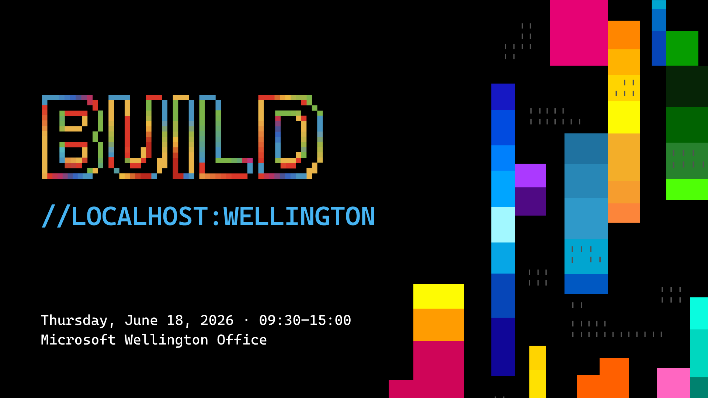

Build 2026 key takeaways
Get a curated walkthrough of the most important announcements for AI application teams.
Microsoft Build //localhost
A focused, in-person event for developers and AI builders ready to move from experimentation to secure, scalable implementation.
Spaces are limited. Early registration is recommended.

Explore how to design, build, and deploy AI-powered solutions on Azure using Microsoft Foundry and GitHub Copilot, with implementation patterns relevant to New Zealand teams.
Get a curated walkthrough of the most important announcements for AI application teams.
See practical examples for agents, model integration, observability, and responsible deployment.
Follow guided sessions that move from setup to working outcomes with modern AI tooling.
Learn patterns for secure networking, evaluations, governance, and operational reliability.
This session is built for teams who want actionable guidance they can apply immediately after the event.
Register Now